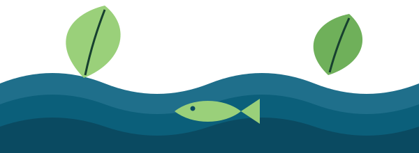

O resíduo certo no lugar certo começa com a gente.
Educação ambiental e reciclagem da Escola Benjamin Constant, pensadas para a nossa comunidade e para os rios e a floresta que a cercam.

Quer participar?
Cadastre-se como morador ou como coletor. Os formulários abrem na seção Participar.
Ir para os cadastrosPontos de coleta
O mapa abaixo mostra uma busca por “Reciclagem” em Belém. Ele ainda não é uma lista verificada pela escola: confirme horário e materiais aceitos antes de ir.
Pontos verificados pela escola
Nenhum ponto cadastrado ainda. Quando a escola confirmar endereços e materiais aceitos, eles aparecem aqui.
#BoraReciclar e transformar o mundo?
Lixo não é resíduo
Resíduo é o que pode ser reutilizado ou reciclado, como garrafas e papelão. É o nosso foco.
Rejeito é o que não tem mais aproveitamento, como o lixo de banheiro.
Cinco hábitos para o dia a dia
- Separe o básico. Recicláveis de um lado, orgânicos e rejeitos do outro.
- Lave as embalagens. Uma passada de água em potes e garrafas já ajuda.
- Reduza embalagens. Prefira produtos com menos plástico.
- Use ecobags. Leve sacolas reutilizáveis às compras.
- Óleo de cozinha não vai no ralo. Guarde numa garrafa fechada e procure um ponto de coleta.
Cores da coleta seletiva
Pelo padrão da Resolução CONAMA nº 275/2001:
- Azul: papel
- Vermelho: plástico
- Verde: vidro
- Amarelo: metal
Participar
Aviso de privacidade (modelo, pendente de validação pela escola): os formulários coletam dados pessoais. Menores de 18 anos precisam de autorização de um responsável.
Cadastro de usuário
Cadastro de coletor
Nossos agradecimentos
- Idealização e coordenação
- Escola Benjamin Constant
Professoras e coordenadoras: Prof. Sabrina Forte e Natália Barbosa - Desenvolvimento e design
- Alunos: Mateus, Hylana e Enzo
- Agradecimentos especiais
- A todos os voluntários, pais e membros da comunidade.